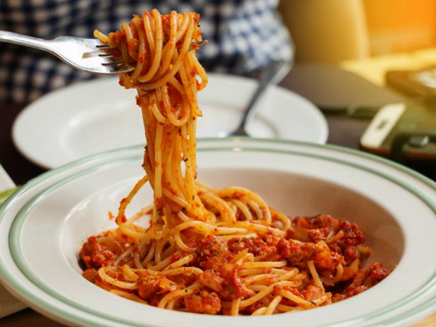

Classic Spaghetti
Who doesn't love the classics? This spaghetti dish is
sure to get that tummy full! And its super simple to make!

Ingredients
- Spaghetti noodles
- salt
- Store bought spaghetti sauce
- Ground beef
- whatever seasonings you enjoy!
Cooking Directions
- Fill a large pot with water and some salt.
Bring to a boil.
- Once boiling add spaghetti noodles. Cook for
7-11 minutes until noodles are tender.
- Strain noodles and return to pot
- Add ground beef to a large skillet and brown
- Add whatever seasonings you like to ground beef
once its browned
- Once beef is cooked, add jar of spaghetti sauce and combine
- Pour sauce into pot of spaghetti and combine
- Enjoy with Parmesan cheese and bread!